1、代码输入方式
在火山平台中支持首拼、全拼和汉字智能提示输入，并且按下空格或回车键可将首个提示内容输入到代码编辑框中。
如下所示：
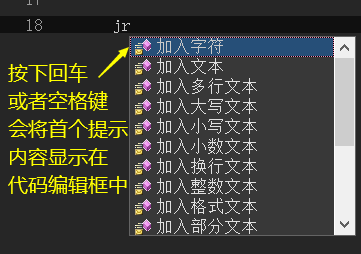
输入方式演示如下：
(1) 首拼输入
如下所示，输入“jbbl”就可以表示“局部变量”。
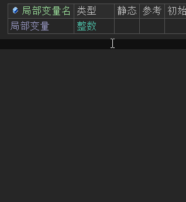
(2) 全拼输入
如下所示，输入“jubu”加空格就可以快速输入“局部变量”。
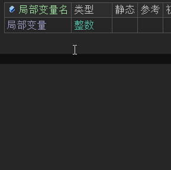
(3) 汉字输入
如下所示，输入“局部”也可以将“局部变量”完整的提示并输入。
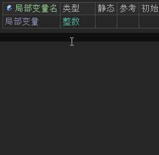
2、代码语句体操作
在火山平台中代码都是语句体形式，具体可看“方法语句”中的介绍。
代码的表现形式都是一层一层，如下：
可以清晰的看出类位于一层，成员变量和方法位于同一层，方法内的局部变量和方法语句调用，又是一层。
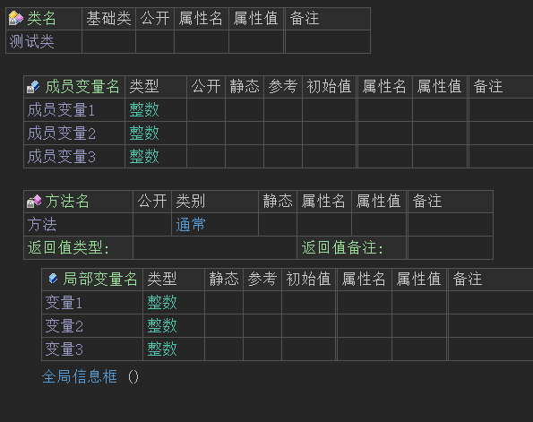
除了类和方法的层级是固定的无法调整外，其它变量、常量、方法语句等都可以进行层级调整。
例如：局部变量也可通过调整层级变为成员变量，也可以重新修改为局部变量。
如下所示：
选中局部变量右键选择“块操作 -> 向内缩进”或者使用快捷键“ctrl + [”。
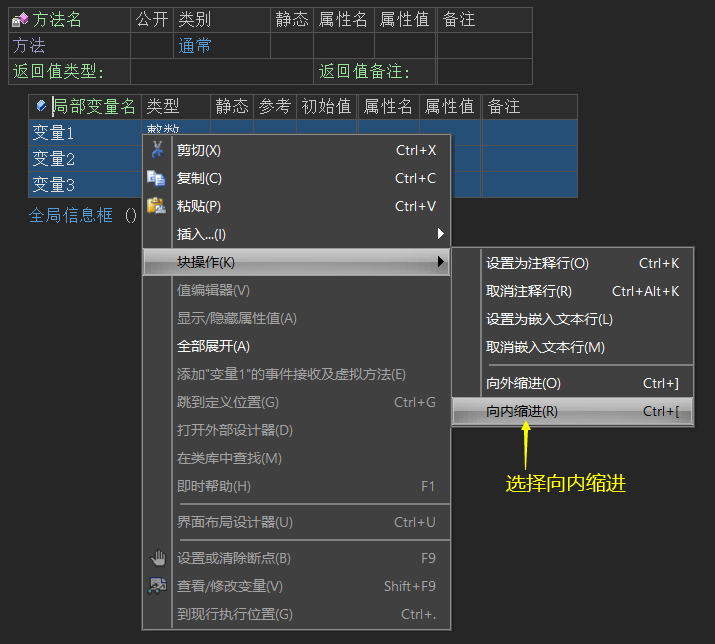
就可以将局部变量改为成员变量。
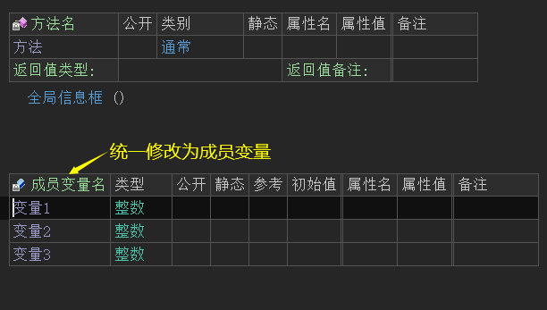
同理使用“向外缩进”或快捷键“ctrl + ]”，可以重新将成员变量改为局部变量。
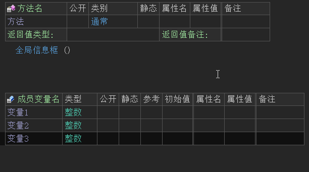
如果在方法中输入代码时，发现代码为绿色，证明代码输入到了注释层，此时可通过快捷键“ctrl + ]”进行向外缩进，就可以让代码重新恢复正常。
如下所示：
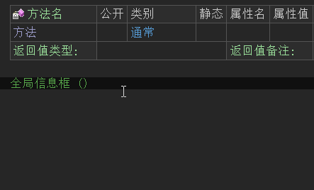
另外还有几个使用较多的快捷键为“Ctrl + Insert”和“Shift + Insert”，用作向前/向后插入行，部分电脑需要配合“Fn”键使用。
其中，在方法的参数/常量/变量定义表格上按下“Shift + Insert”快捷键，将固定在其下方插入一条空白语句行，如图：
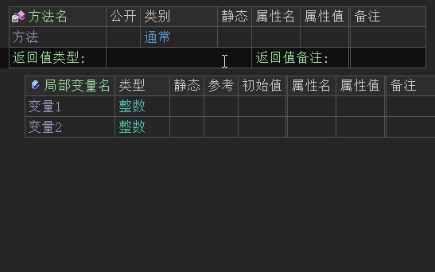
在“变量1”的定义行上按下“Shift + Insert”快捷键后的结果如下：
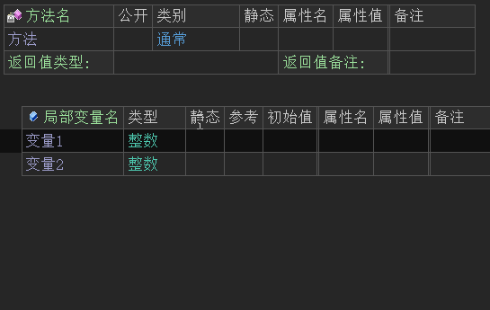
3、按需编译
火山编译器实行的是按需编译模式，也就是说，凡是不可能被执行到的代码，一概不进行编译。具体为：
从程序的启动位置开始，所有未在程序执行流程中的代码都将不会被编译。
以火山安卓开发平台举例，譬如下图：
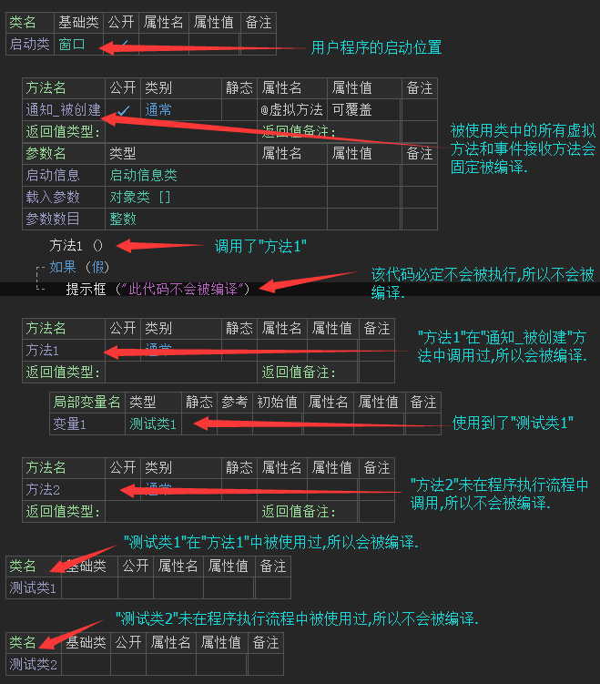